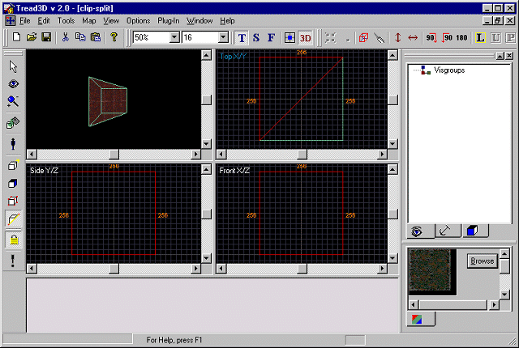
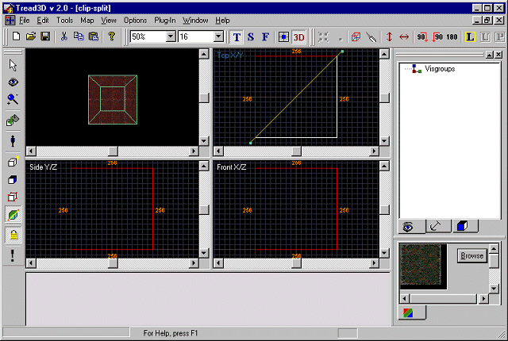
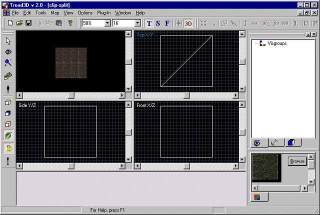
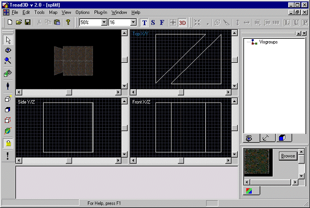

This is a walk-through as to how to clip or split a brush.
Before starting this tutorial you should first get acquainted with the basics of the "Tread3D" editor; the screen and the various commands that are available.
As in the previous tutorials start "Tread3D" and make one very basic brush.
Lets make the brush 256x256x256 units.
Your screen should look like the one below.
Now the first operation we will do is "clip" a brush.
This will cut a section out of a brush and delete the cut section.
Now click once on the "Clip Split" button.

Now highlight the brush.
In any of the three views (In this example we will use the TopX/Y view) draw a line with the pointer that cuts through the brush.
Your screen should now look like the one below.
Now press the "Space Bar" on your keyboard.
Your screen should look like the one below.

You will now notice that the brush has been clipped.
The "Red" lines represent the final brush configuration.
The "Green" lines represent the section of brush that has been removed.
Now click on the "pointer" button and then click on the background grid.
You will now see the final brush configuration.
Your screen should look like the one below.

Thats all there is to it.
Now some important notes:
The "Cut" line must pass through the brush completely.
The plane of the "clip" will be perpendicular the view you draw the "Cut" line in.
The deleted section of a brush will be to the right of the "Cut" line (Relative to the "Start-Stop position).
Now the second operation we will do is "split" a brush.
This will divide a brush in two.
As in the previous tutorials start "Tread3D" and make one very basic brush.
Lets again make the brush 256x256x256 units.
Your screen should again look like the one below.
Now click two times on the "Clip Split" button.

Now highlight the brush.
In any of the three views (In this example we will use the TopX/Y view) draw a line with the pointer that cuts through the brush.
Your screen should now look like the one below.

Now press the "Space Bar" on your keyboard.
Your screen should look like the one below.

You will now notice that the brush has been split in two.
Now click on the "pointer" button.
Highlight one brush and drag it away fron the other.
Your screen should look like the one below.

Now some important notes:
The "Cut" line must pass through the brush completely.
The plane of the "split" will be perpendicular the view you draw the "Cut" line in.
Thats all there is to it.
What you have done is "Clipped and Split" a brush.
Now resave your work.